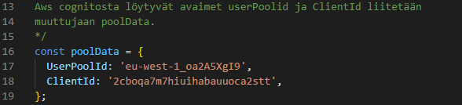
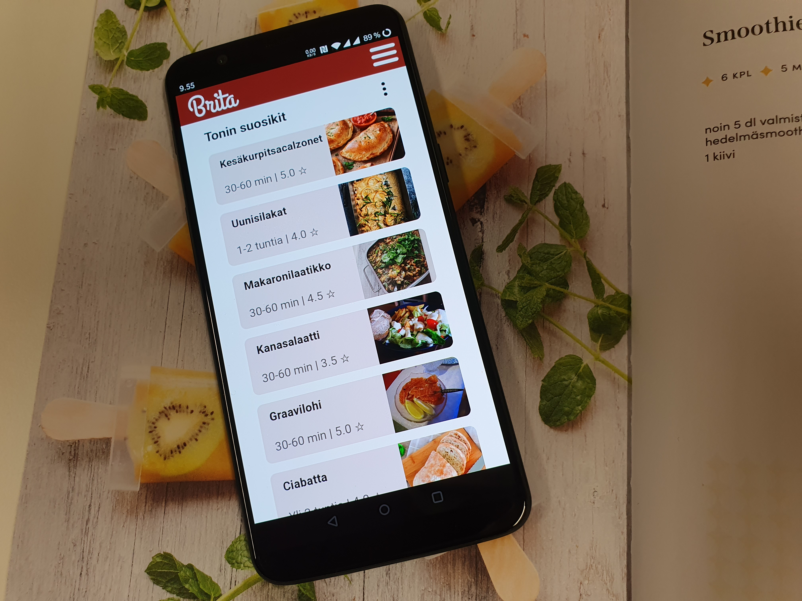

Mikä on Ticorporate?
Ticorporate on JAMK:in tietojenkäsittely- tutkinto-ohjelmaan kuuluva n. 4kk:n mittainen projektinhallintaa käsittelevä kurssi, jonka aikana oppilaat kehittävät 4-5 hengen tiimeissä web-sovelluksen tai pelin, riippuen siitä, kuuluuko opiskelija peli vai sovelluspuolen tutkintoon. Kuulun sovelluspuolelle, joten tiimimme kehitti sovelluksen. Pääroolinani projektissa oli tekniikka eli frontend ja sivuroolina testaus. Testaukseen käytin projektissa kuitenkin lopulta suunniteltua enemmän aikaa.
Brita

Kuva sovelluksen etusivusta
Kehittämämme sovellus on Brita -nimeä käyttävä pwa-reseptisovellus. Sovellus saatiin valmiiksi joulukuussa 2022 ja sitä on mahdollista koekäyttää niin kauan kuin AWS-palvelumme ovat toiminnassa. Sovellusta voi käyttää selaimessa niin puhelimella, kuin tietokoneellakin.
Sovellusta voi kokeilla osoitteesta: https://master.ddudu42yaerab.amplifyapp.com/ Huom! Sivut ovat toiminnassa vain väliaikaisesti, joten jos ne eivät toimi, niin todennäköisesti se tarkoittaa sitä, että AWS-palvelumme eivät ole enää toiminnassa.
Sovelluksen kotisivut
Sovelluksen Github repositorio
Omat tuotokset projektissa
Alla on muutamia näytteitä projektissa tehdyistä omista tuotoksista testauksen ja frontendin osalta. JavaScript kirjastona käytimme suosittua Reactia. Sovelluksen backend on tehty Expressillä ja pilvipalveluna toimii Amazon Web Service. Koko projektin koodi löytyy Githubista.
Frontend (React)
Käyttäjän sisäänkirjautumista käsittelevä -komponentti.

Muuttujien määrittely sähköpostin ja salasanan osalta.

OwnLists.js -komponentin koodia.

Komponentin otsikko, painike ja importoitu ListModal.js komponentti.
Testaus (Cypress & Jest)

Funktiot palauttavat ja tallentavat kirjautumistiedot jokaisessa testissä, jotta kirjautumistiedot säilyvät testien välillä.

Reseptin lisäys End to End -testi Cypressillä

Yksikkötesti Jestillä, jossa testataan Loading komponentin renderöimää tekstiä
Lopputulos
Projektin lopputuloksena valmistui suhteellisen hyvin toimiva pwa-sovellus. Ongelmilta ei vältytty, mutta kaikista isoimmista ongelmista selvittiin ja sovellus valmistui aikataulussa, siltä osin, kuin olimme sen valmiiksi määritelleet kriteeriemme pohjalta. Ticorporate oli kokonaisuutta katsoen varsin mukava kurssi, jossa sai kokemusta sovelluskehityksestä.